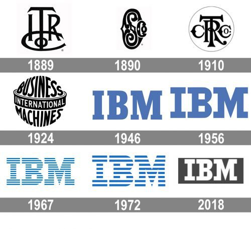
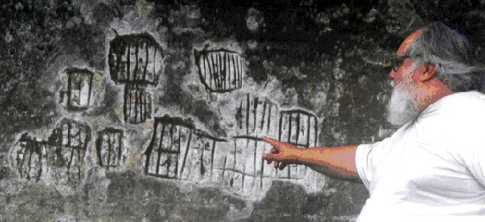

O ser humano teve várias denominações por parte dos antropólogos: Os computadores de hoje são essencialmente artefatos para amplificar as capacidades intelectuais do homem. A origem dos primeiros artefatos com a finalidade amplificar as capacidades intelectuais do homem se perde nas brumas do passado. Suas origens estão certamente ligadas, às sociedades matriarcais que se retiraram para as cavernas por ocasião da era glacial que cobriu grande parte do globo terrestre na pré-história. Encontram-se vestígios de tais artefatos, (montes de pedras, ou seja, cálculos e riscos em paredes) em vários locais. Por exemplo, a caverna de Goyet, perto de Namur, na Bélgica foi transformada em museu onde se pode ver como deveriam viver nossos antepassados 60.000 anos atrás e a imagem abaixo mostra riscos de parede que provavelmente eram um sistema de contagem.
